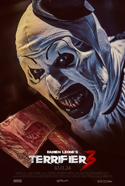
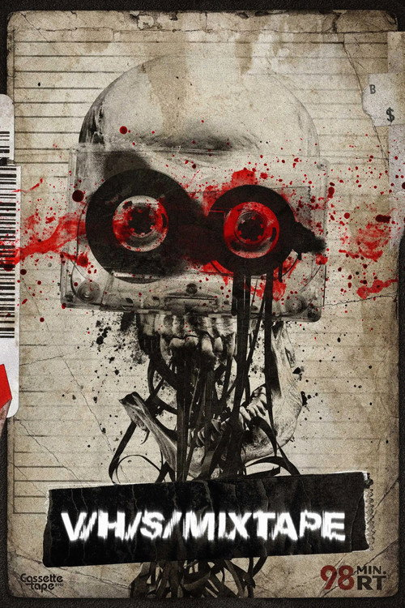
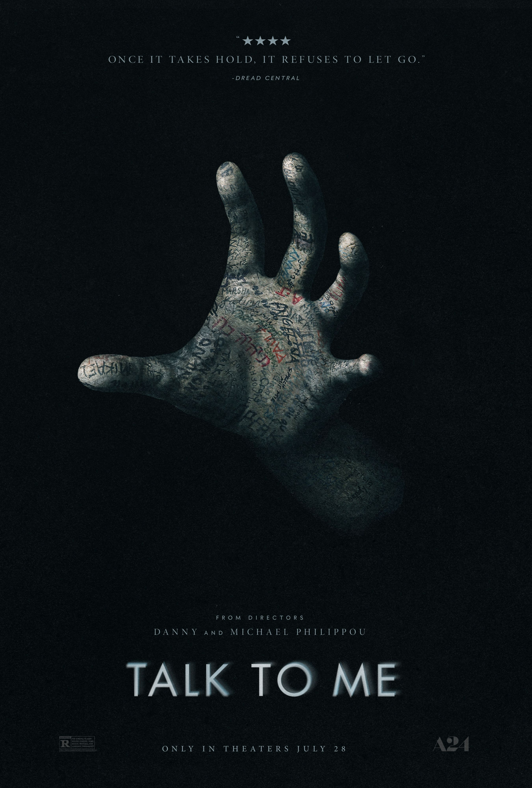
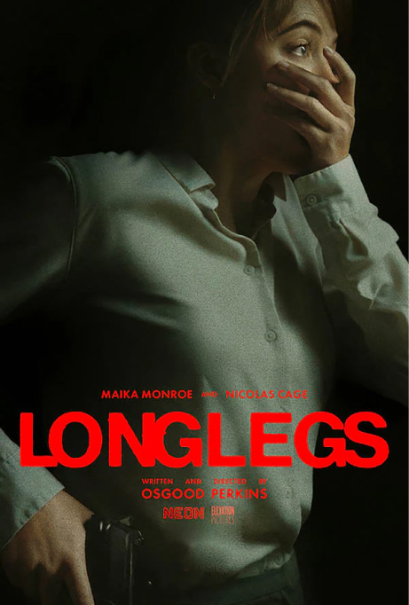
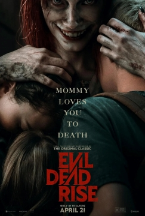
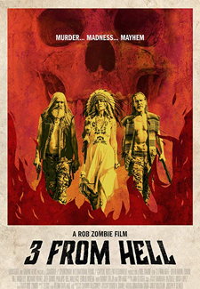

FILE 01 / 07FRANCHISE DEEP DIVE
The Miles County Massacre
Damien Leone’s gleefully vicious Terrifier universe—black sack, greasepaint grin, and practical carnage that made Art an icon.
NEW RELEASE · OCT 09, 2026
Press play. Keep the lights on.
The latest horror news, new-release picks and upcoming films. Sources checked October 9, 2026.

THE NEXT CAMPFIRE STORY
A fresh origin story at the lake that started it all. Linda Cardellini leads as Pamela Voorhees, in a series that turns the Friday the 13th legend toward the grieving mother and the town surrounding the camp.
FEATURED RELEASE • PREMIERE DATE LISTED BY PEACOCKFUTURE DAMAGE / THE RELEASE BOARD
Five upcoming picks. Fresh trailers load on demand; the lead feature rotates every 12 hours.
Release dates can move. New titles are added to the editorial feed as studios and distributors confirm dates and trailers.
YOUR PICKS / THE FRESH CUT
A living watchlist of the titles you called out. Released, arriving soon, and date-to-be-announced are clearly marked.
AFTERCUT SIGNAL / TRAILER PREVIEWS
THE OFFICIAL TRAILER • PEACOCK ORIGINAL
PRESS PLAY TO CONNECTTHE FREE STREAMING NIGHT SHIFT
Pull live horror listings, see what’s on now and next, or browse free on-demand shelves. Availability changes by region; links always lead to the service.
AFTER/CUT SELECTIONS / KEEPERS FROM THE VAULT
Seven modern horror standouts worth another look. Open a film file, revisit the trailer, or follow the coverage.

FILE 01 / 07FRANCHISE DEEP DIVE
Damien Leone’s gleefully vicious Terrifier universe—black sack, greasepaint grin, and practical carnage that made Art an icon.

FILE 02 / 07POSSESSION / A24
A party trick becomes a possession ritual in the Philippou brothers’ sharp, feral take on grief, peer pressure, and viral horror.

FILE 03 / 07SERIAL-KILLER HORROR
Osgood Perkins turns a serial-killer investigation into a dread-soaked occult puzzle, with a performance from Nicolas Cage that crawls under your skin.
 FILE 04 / 07
FILE 04 / 07BODY HORROR / MUBI
Coralie Fargeat’s grotesque body-horror spiral turns the pursuit of youth into a candy-colored, practical-effects meltdown.

FILE 05 / 07DEMONIC / SPLATTER
Lee Cronin drags the Deadites into a cramped Los Angeles apartment for a nasty, full-volume family siege.
 FILE 06 / 07
FILE 06 / 07KOREAN / ZOMBIE HORROR
A relentless siege on rails. Yeon Sang-ho’s zombie sprint balances breathless action with a bruising story about who we choose to protect.

FILE 07 / 07ROB ZOMBIE / FIREFLY TRILOGY
Rob Zombie brings the Firefly family back for one last road trip through desert dust, busted neon, and grindhouse mayhem. The final chapter of the House of 1000 Corpses trilogy.
THE VIDEO VAULT / 1974—NOW
FEATURE DOSSIER / DAMIEN LEONE
He doesn’t need to. Art the Clown turned silence into a punchline and practical effects into a contact sport. Start with the shorts, follow the body count, then decide which installment made you look away.
THE PEOPLE BEHIND THE DAMAGE
Open a director file for bios, films from our archive, and research links.
David rewired the flesh. Brandon keeps finding new ports.
VIDEODROME → POSSESSORFolklore, dread, and the slow click of a lock.
THE BLACKCOAT’S DAUGHTER → LONGLEGSOld-school splatter, new-school stamina.
ALL ROADS LEAD TO MILES COUNTYHollywood polish with a blade behind its back.
THE X TRILOGY → MAXXXINETwo films that still dare you to keep watching.
AUDITION → ICHI THE KILLERTHE MONSTER WAS NEVER— AFTERCUT FIELD NOTES, VOL. 01BACK TO TOP ↑
THE ENDING.